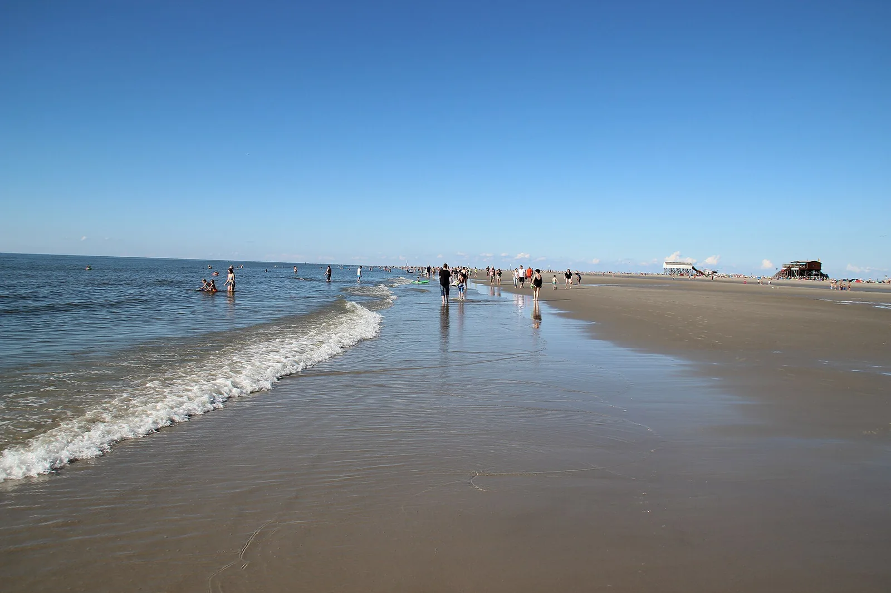

Sankt Peter-Ording
Frise-du-Nord, Schleswig-Holstein, Allemagne · kitesurf, windsurf, baignade

Station balnéaire de la mer du Nord célèbre pour sa plage de sable longue et très large, où se dressent des maisons sur pilotis. L’estran immense attire kitesurfeurs, windsurfeurs et chars à voile.
- Lieu
- Frise-du-Nord, Schleswig-Holstein, Allemagne
- Niveau
- Intermédiaire
- Activités
- kitesurf, windsurf, baignade
- Type d'eau
- Mer / océan
- Coordonnées
- 54.33, 8.60 (position approximative du secteur)
Dangers à connaître
- Marée montante qui remplit rapidement les chenaux de l’estran.
- Zones réservées au kite et à la baignade : respecte le balisage.
Le conseil d'Ocean Buddy
Consulte les horaires de marée avant de partir : à marée basse, l’eau peut être très loin de la digue.
Ouvrir dans Ocean Buddy Télécharger sur l'App Store
Source : Fiche Ocean Buddy · septembre 2026 · à vérifier localement.